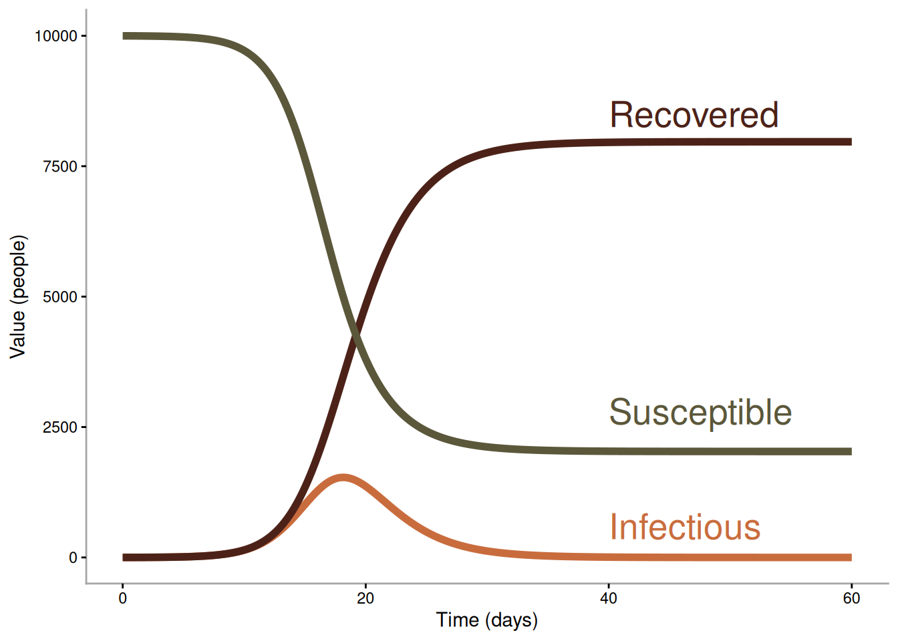
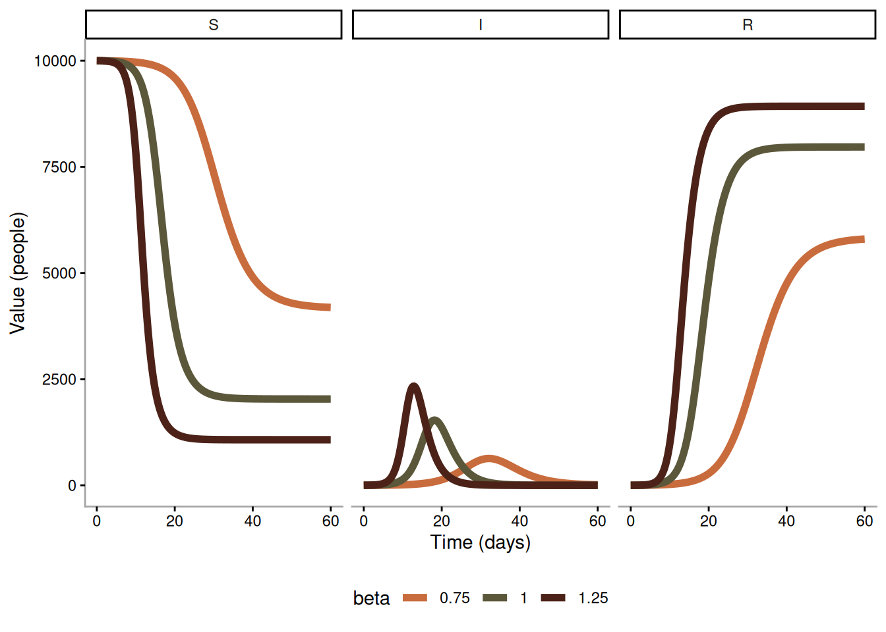
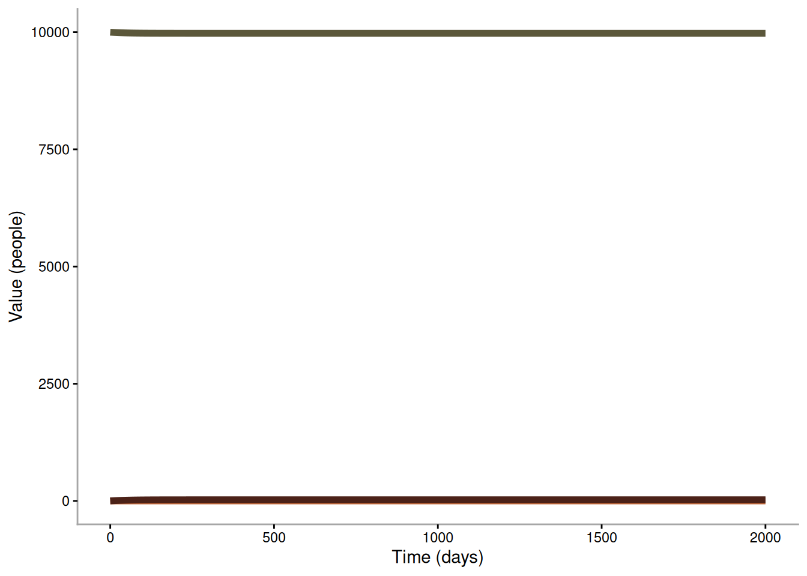

# Load required libraries
library(dplyr)
library(deSolve)
library(ggplot2)
library(gt)
library(tidyr)Practical - Introduction to Mathematical Modelling (Solutions)
Estimating \(\mathcal{R}_0\) from the final size of an epidemic
The final proportion of a population infected (\(r_\infty\)) and the basic reproduction number (\(\mathcal{R}_0\)) are related through the following equation:
\[\begin{equation} r_\infty = 1 - \exp(-\mathcal{R}_0 r_\infty) \end{equation}\]
To solve for \(\mathcal{R}_0\) given a final size we can simply plug in our observed final size and rearrange the equation as shown below:
\[\begin{equation} \mathcal{R}_0 = -\frac{\ln(1 - r_\infty)}{r_\infty} \end{equation}\]
Question 1
Write a function called my_R0 that takes a value of \(r_\infty\) (the final epidemic size) and returns an estimated \(\mathcal{R}_0\) based on the above relationship.
my_R0 <- function(r_inf)
{
R0 <- -log(1 - r_inf) / r_inf
return(R0)
}Question 2
diseases <- data.frame(
Disease = c("H1N1 Influenza", "Measles"),
Proportion_Infected = c(0.24, 0.77),
Source = c("Lessler et al, 2009", "Panum, 1847")
)
diseases |>
gt() |>
cols_label(
Proportion_Infected = "Proportion Infected") |>
fmt_number(
columns = Proportion_Infected,
decimals = 2)| Disease | Proportion Infected | Source |
|---|---|---|
| H1N1 Influenza | 0.24 | Lessler et al, 2009 |
| Measles | 0.77 | Panum, 1847 |
Use my_R0 to estimate \(\mathcal{R}_0\) for each of the two outbreaks above.
my_R0(diseases$Proportion_Infected[[1]]) |> round(2)[1] 1.14my_R0(diseases$Proportion_Infected[[2]]) |> round(2)[1] 1.91Question 3
Next, let’s estimate the final size of an epidemic for a given value of \(\mathcal{R}_0\). To do this, we need to solve the equation above for \(r_\infty\) using an iterative method. Start by writing an objective function that takes a value of \(r_\infty\) and \(\mathcal{R}_0\) as inputs and returns the absolute difference between the right and left hand sides of the equation above. We will want to minimise this value (i.e. the smallest difference between the right side and left sides of the equation). Try three candidate values for \(r_\infty\) of 0.2, 0.4, 0.6, with an \(\mathcal{R}_0\) of 1.1 - which is the closest to the optimal?
objective_function <- function(r_inf, R0)
{
left_side <- r_inf
right_side <- 1 - exp(-R0 * r_inf)
return(abs(left_side - right_side))
}
R0_test <- 1.1
r_inf_test_1 <- 0.2
r_inf_test_2 <- 0.4
r_inf_test_3 <- 0.6
result_1 <- objective_function(r_inf_test_1, R0_test)
result_2 <- objective_function(r_inf_test_2, R0_test)
result_3 <- objective_function(r_inf_test_3, R0_test)
cat("Test results for R0 = 1.1:\n")Test results for R0 = 1.1:cat("r_inf = 0.2:", result_1, "\n")r_inf = 0.2: 0.002518798 cat("r_inf = 0.4:", result_2, "\n")r_inf = 0.4: 0.04403642 cat("r_inf = 0.6:", result_3, "\n")r_inf = 0.6: 0.1168513 # Find optimal r_inf using optimization
fixed_R0 <- 1.1
wrapper_objective_fn <- function(r_inf) objective_function(r_inf, fixed_R0)
res <- optimize(wrapper_objective_fn, interval = c(0, 1))
cat("\nOptimization result:\n")
Optimization result:cat("Minimum objective value:", res$objective, "\n")Minimum objective value: 2.648058e-06 cat("Optimal r_inf:", res$minimum, "\n")Optimal r_inf: 0.1761059 Question 4
For three different pandemic influenza outbreaks, the estimated mean \(\mathcal{R}_0\) values were 1.5, 2.0, and 2.5. Estimate the final epidemic size for each outbreak.
fixed_R0 <- 1.5
wrapper_objective_fn <- function(r_inf) objective_function(r_inf, fixed_R0)
res1 <- optimize(wrapper_objective_fn, interval = c(0, 1))
fixed_R0 <- 2
wrapper_objective_fn <- function(r_inf) objective_function(r_inf, fixed_R0)
res2 <- optimize(wrapper_objective_fn, interval = c(0, 1))
fixed_R0 <- 2.5
wrapper_objective_fn <- function(r_inf) objective_function(r_inf, fixed_R0)
res3 <- optimize(wrapper_objective_fn, interval = c(0, 1))
data.frame(R0 = c(1.5, 2.0, 2.5),
r_inf = c(res1$minimum, res2$minimum, res3$minimum)) |>
gt() |>
fmt_number(
columns = r_inf,
decimals = 2)| R0 | r_inf |
|---|---|
| 1.5 | 0.58 |
| 2.0 | 0.80 |
| 2.5 | 0.89 |
Numerically solving SIR models
We will introduce code to numerically integrate SIR models. We will use the deSolve package.
Question 5
Create an SIR function that returns dS, dI, and dR for a given set of inputs: par_beta, par_gamma, and par_N (population size). Note that here we are working with the actual numbers of susceptible, infectious, and recovered individuals rather than their proportions.
sir_model <- function(time, compartments, parameters) {
with(as.list(c(compartments, parameters)), {
dS <- -par_beta * S * I / par_N
dI <- par_beta * S * I / par_N - par_gamma * I
dR <- par_gamma * I
list(c(dS, dI, dR))
})
}Question 6
We can then use this code to numerically integrate an SIR model with fixed parameters. Use an initial state of S = 9999, I = 1, R = 0, a gamma of 0.5 and a beta of 1. Plot the resulting curves of S, I and R. Simulate for 60 days.
# Initial values
par_N <- 10000
compartments <- c(S = 9999, I = 1, R = 0)
par_gamma <- 0.5
# Parameters
parameters <- c(
par_beta = 1, # transmission rate
par_gamma = par_gamma, # recovery rate
par_N = par_N # population size
)
# Time points
stop_time <- 60
times <- seq(0, stop_time, by = 1/8)
# Solve ODE
out <- ode(
y = compartments,
times = times,
func = sir_model,
parms = parameters
) |> as.data.frame()tidy_out <- out |>
pivot_longer(-time, names_to = "Compartment") |>
mutate(beta = "1")
text_df <- data.frame(
Compartment = c("S", "I", "R"),
label = c("Susceptible", "Infectious", "Recovered"),
xpos = c(40),
ypos = c(2800, 600, 8500))
ggplot(tidy_out, aes(x = time, y = value)) +
geom_line(aes(group = Compartment, colour = Compartment), linewidth = 2) +
geom_text(data = text_df, aes(label = label, x = xpos, y = ypos,
colour = Compartment), size = 7, hjust = 0) +
scale_colour_manual(values = c("S" = "#5B573A",
"I" = "#C96C3D",
"R" = "#4C2218")) +
labs(x = "Time (days)", y = "Value (people)") +
theme_classic() +
theme(axis.line = element_line(colour = "grey65"),
legend.position = "none")
Question 7
Run two more simulations. Change par_beta to 0.75 and 1.25. All other parameters and states should be the same as above. Plot the output from these simulations on the same plot. Describe how these two epidemics differ. Why would a different beta value result in a different epidemic?
parameters["par_beta"] <- 0.75
out2 <- ode(
y = compartments,
times = times,
func = sir_model,
parms = parameters
) |> as.data.frame()
tidy_out2 <- out2 |>
pivot_longer(-time, names_to = "Compartment") |>
mutate(beta = "0.75")
parameters["par_beta"] <- 1.25
out3 <- ode(
y = compartments,
times = times,
func = sir_model,
parms = parameters
) |> as.data.frame()
tidy_out3 <- out3 |>
pivot_longer(-time, names_to = "Compartment") |>
mutate(beta = "1.25")
df <- bind_rows(tidy_out, tidy_out2, tidy_out3) |>
mutate(Compartment = factor(Compartment, levels = c("S", "I", "R")))
ggplot(df, aes(x = time, y = value)) +
geom_line(aes(group = interaction(beta, Compartment),
colour = beta), linewidth = 2) +
scale_colour_manual(values = c("1" = "#5B573A",
"0.75" = "#C96C3D",
"1.25" = "#4C2218")) +
labs(x = "Time (days)", y = "Value (people)") +
theme_classic() +
facet_wrap(~Compartment, nrow = 1) +
theme(axis.line = element_line(colour = "grey65"),
legend.position = "bottom")
Question 8
Estimate the final epidemic size of the three simulations above and compare against those estimated in Question 4.
r_inf_vals <- df |> filter(time == max(time),
Compartment == "R") |>
mutate(r_inf = value / par_N) |>
pull(r_inf)
beta_vals <- c(1, 0.75, 1.25)
R0_vals <- beta_vals / par_gamma
data.frame(beta = beta_vals,
R0 = R0_vals,
r_inf = r_inf_vals) |>
arrange(beta) |>
gt() |>
fmt_number(
columns = r_inf,
decimals = 2)| beta | R0 | r_inf |
|---|---|---|
| 0.75 | 1.5 | 0.58 |
| 1.00 | 2.0 | 0.80 |
| 1.25 | 2.5 | 0.89 |
Question 9
What’s the largest value of par_beta for which the introduction of an infectious individuals does not result in an epidemic? Show your answer with a simulation. Simulate for 2000 days.
parameters["par_beta"] <- 0.48
times <- seq(0, 2000, by = 1/8)
out4 <- ode(
y = compartments,
times = times,
func = sir_model,
parms = parameters
) |> as.data.frame()
tidy_out4 <- out4 |>
pivot_longer(-time, names_to = "Compartment")
ggplot(tidy_out4, aes(x = time, y = value)) +
geom_line(aes(group = Compartment, colour = Compartment), linewidth = 2) +
scale_colour_manual(values = c("S" = "#5B573A",
"I" = "#C96C3D",
"R" = "#4C2218")) +
labs(x = "Time (days)", y = "Value (people)") +
theme_classic() +
theme(axis.line = element_line(colour = "grey65"),
legend.position = "none")